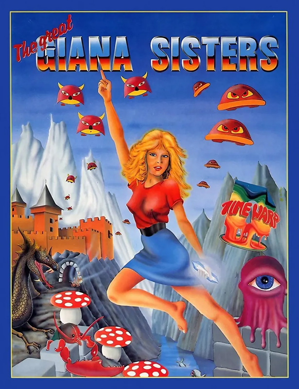
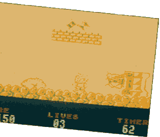
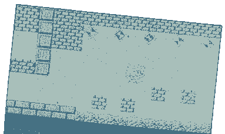

The Great Giana Sisters


{kind=link}

| Publisher: | Rainbow Arts |
| Price: | £8.99 Cassette, £12.99 Disk |
| Year: | N/A |
| Source: | CRASH, Issue 55 |

The Great Giana Sisters was completed and sent for review but, due to legal action, never made it to the shops.
Sleeping safely in her bed one night, petite Giana from Milano has a strange, macabre dream. In her nightmare, she enters a weird land, full of strange aliens and terrible traps.
Her only chance of escaping the dreamland is to explore its 32 levels in search of a magic diamond. The adventure takes place above or below ground and contains many platforms and obstacles. Giana has a time limit of 100 seconds in which to complete each horizontally-scrolling landscape; failure to do so results in the loss of one of three lives.

While jumping and running over the platforms, Giana must avoid lethal contact with the many aliens which look suspiciously like a host of cute and cuddly creatures. They include the squirming worms (cute?), scuttling lobsters and giant bees. These can be squashed by jumping on them from above, or shot using dream-bubbles or an all-destroying smart bomb.
Magic crystals can be obtained by head-butting or hitting blocks with a star on them; when 100 have been collected, Giana is rewarded with an extra life. Extra weapons and features can also be gained from blocks to make progress easier. These include three types of dream-bubble: lightning bolts, rebounding double lightning bolts and strawberries which home in on the aliens. Extra features include magic bombs, a clock which sends aliens to sleep for a while, a lollipop (yielding an extra life) and a water drop to protect Giana against fire.

Traps in the landscape include lethal spikes, fire pits and pools of water. There are also holes, of which some are deadly, while others lead to secret crystal-filled rooms — only trial and error determines which are which.
A status strip above the main play area displays the number of crystals collected, lives remaining and time left. If Giana completes a level within the time limit, she earns a bonus: the number of seconds left multiplied by ten.
Only if poor little Giana manages to escape through the 32 levels carrying the magical diamond, can she return to her normal, peaceful world in old Milano. If two players wish to take part, they take turns to play; the second player controls Giana’s sister Maria.
CRITICISM
“The Great Giana Sisters lacks the colour of the Commodore 64 version, but makes up for it with nicely shaded, well-drawn characters. The horizontal scrolling is smooth, although a trifle slow at times. Little Giana is ever so cutely animated as she runs and jumps through the various levels, head-butting the blocks and squashing the animals. When she collect the magic wheel, she even gets an electric shock which makes her hair stand on end! There is some great sound on the 128K with a catchy tune and atmospheric sound effects. Playability ranks highly, especially with the many extra weapons and features to help make progress easier. It’s this variety which makes Giana’s adventure so addictive. Giana Sisters is a neat variation on the classic Super Mario Bros theme and should be popular with all arcade fans. Go out and buy it.”
PHIL ... 91%
“As Giana and Maria from Milano head-butt their way through their fairy-tale adventure, they encounter an incredible series of weird and wonderful creatures. Though monochromatic, the lobsters, turtles and scuttling spiders are detailed and create an infectiously light-hearted cartoon atmosphere. Each level boasts a bewildering array of walls, caverns, chasms, towers, crevasses and canyons, punctured by a seemingly endless series of hidden treasure and rooms. There’s always something new to discover even if you’ve been playing the game for days and days. The controls are smooth and the animation of Giana, particularly when her cute-little-girl haircut turns into a full-blown punk afro affair, is practically perfect. Comparisons with Super Mario Bros are inevitable. Obviously The Great Giana Sisters can’t emulate the superior graphics and sound of the arcade machine but, in terms of gameplay (which is the most important thing after all, those Super Mario Bros have certainly met their match.”
KATI ... 91%
“The Great Giana Sisters is another one of those ‘bang your head on the brick’ games. You know the type — like Super Mario Bros. The graphics are cute and cuddly with the little sisters excellently animated, but perhaps just a mite too slow. The monsters and other sprites are also well drawn and to kill them you have to manoeuvre your sister so that she drops down and squashes the aliens flat. As for the colour: well, the monochrome looks like it’s been produced randomly and it comes up with some rather garish combinations (magenta paper and cyan ink!) but this doesn’t spoil the action. Each level holds more surprises and the graphics get better all the time. Despite the drawback in terms of speed, the game is immensely playable; I couldn’t put the joystick down for ages. An essential purchase for all Spectrum arcade gamesters.”
NICK ... 93%
COMMENTS
| Control keys: | Cursor, Kempston, Sinclair |
| Joystick: | Monochromatic, cartoon-like characters distinguished by plenty of detail |
| Graphics: | Catchy tunes and spot effects |
| Sound: | Two-player option |
| General rating: | Highly addictive and great fun to play. Plenty of hidden passages and surprise features should keep you hooked for weeks |
| Presentation: | 89% |
| Graphics: | 79% |
| Playability: | 93% |
| Addictive qualities: | 92% |
| Overall: | 92% |